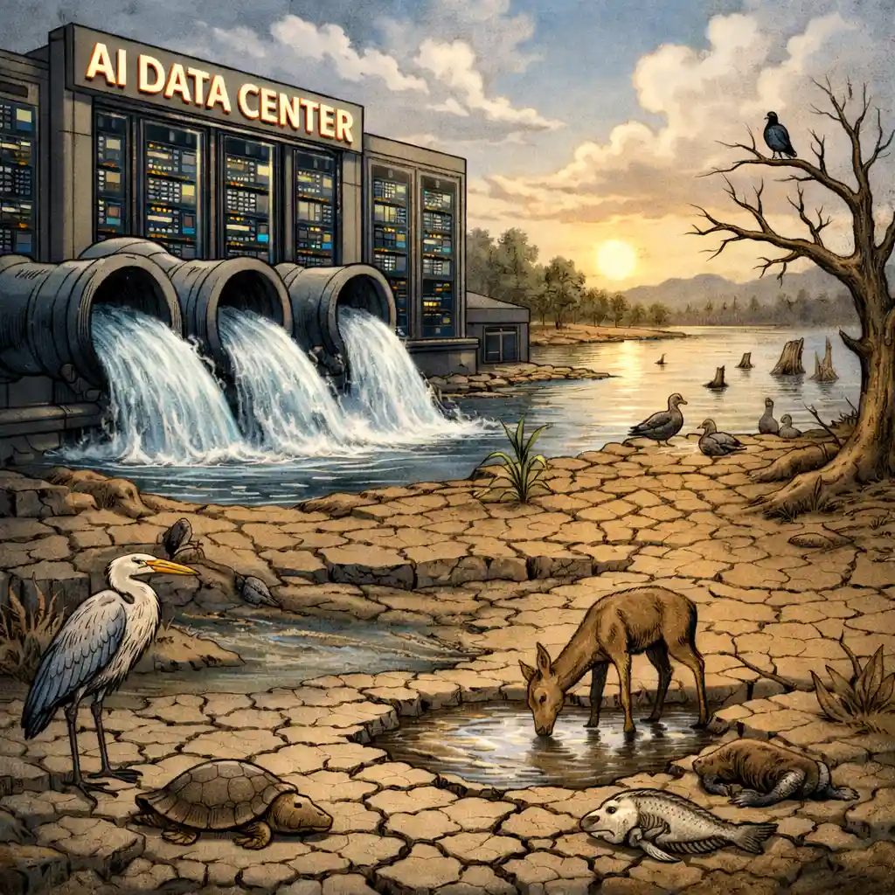

Energy Use
AI runs on computers that use electricity. When this electricity comes from fossil fuels, it can contribute to greenhouse gas emissions.

AI runs on computers that use electricity. When this electricity comes from fossil fuels, it can contribute to greenhouse gas emissions.
Some data centers use water to cool their computers. Old and discarded computer equipment can also contribute to electronic waste.
